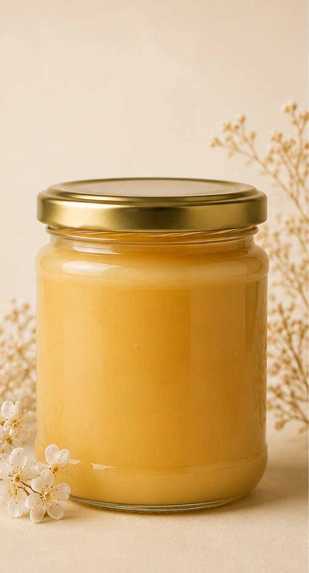

Nicht vorrätig.

Sommerblütenhonig
9,00 €
Cremig gerührter Honig aus Sommerblüten, Obstbäumen, Feldern und Wäldern rund um Forstinning im Münchner Osten.


Natürlich. Regional. Mit Liebe gemacht.

Cremig gerührter Honig aus Sommerblüten, Obstbäumen, Feldern und Wäldern rund um Forstinning im Münchner Osten.

Handgegossene Bienenwachskerzen älterer Waben, die von unseren Bienen aussortiert werden: eine kleine Rose (ca. Teelichtgröße) oder ein Stumpen mit Bienenwaben.

Feiner Honigmet mit Kirsche. Hergestellt aus Honig, der beim Entdeckeln der Waben anfällt und so sinnvoll weiterverwendet wird.
Verkauf ausschließlich zur Selbstabholung.
Eine Lieferung bieten wir nicht an.
Namensgeber der Imkerei ist unser kleiner Hund Snoopy.
Auf der Suche nach einem Hobby, das sich gut mit entspannten Stunden im Garten verbinden lässt, kamen wir zum Imkern.
Während die Bienen fleißig Nektar sammeln, kümmert sich Snoopy um die wirklich wichtigen Dinge:
Sonnenbaden, Schlafen und gelegentlich die Kontrolle der Brotzeit am Bienenstand.
Unsere Völker werden von den Königinnen Martha, Janina und Alexandra angeführt.
Die Damen mögen zwar deutlich kleiner sein als Snoopy, leisten aber den mit Abstand größten Beitrag.
Aus der Begeisterung für unsere Bienen, die Natur und Snoopies Leidenschaft für ausgedehnte Nickerchen im Schatten entstand schließlich unsere kleine Imkerei.
Statt auf große Produktionsmengen setzen wir auf eine naturnahe Imkerei und stellen deshlab unsere Produkte nur in kleinen Mengen her.
Außerdem liegt uns die Förderung heimischer Insekten am Herzen.
Unser Imkerverein überzeugt mit wildbienenfreundlichen Blumen rund um seinen Bienenstand, und auch in unserem Garten versuchen wir solche Lebensräume zu schaffen.
Wir freuen uns über jede Wiese, die wachsen und blühen darf, und über die vielen Blühflächen, die inzwischen in Münchens Parks entstehen.
Solche kleinen Lebensräume sind wichtig:
denn für Wildbienen und andere Insekten braucht es mehr Vielfalt,
weniger Monokulturen und einen verantwortungsvollen Umgang mit Pflanzenschutzmitteln.
Dr. Martha Frysztacki
+49 157 733 319 38
Jan Schmidt
+49 157 733 319 38
und Snoopy
macht vermutlich gerade ein Nickerchen.